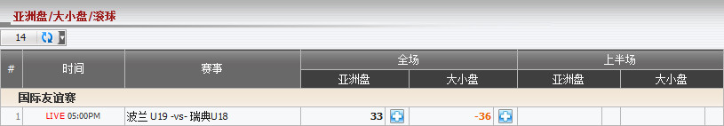
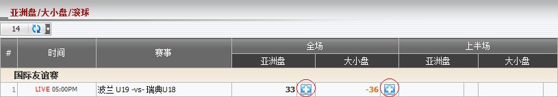
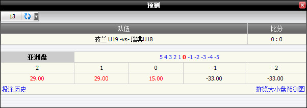
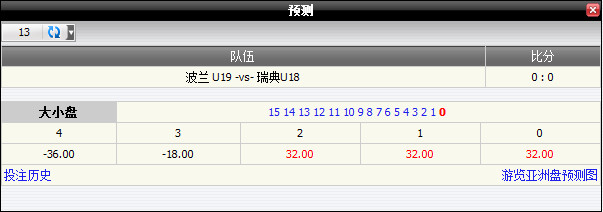

亚洲盘/ 大小/ 滚球
定义:
显示基于注单占成数的总代理输赢, 投注类型为上半场或全场亚洲盘/ 大小/ 滚球 (图1.1)。

图 1.1
与 国际友谊赛, 会员投注于赛事 波兰 U19 -vs- 瑞典 U18, 详情如下:
-
第一投注: 投注额 = 110, 赔率 = 0.88, 投注类型: 亚洲盘, 全场, 总代理占成 = 30%。
--> 总代理基于占成数的所得 = -(投注额 *占成数) * 1 = -110 * 30% * 1 = 33
-
第二投注: 投注额 = 120, 赔率 = 0.88, 投注类型: 大小, 全场, 总代理占成 = 30%
--> 总代理基于占成数的所得 = -(投注额 * 占成数) * 1 = -120 * 30% * 1 = -36
注:
- 总代理基于占成数的盘所得于亚洲盘 = (主队总投注额 - 客队总投注额) * 总代理占成。
- 总代理基于占成数的所得于大小盘 = (大盘总投注额 - 小盘总投注额) * 总代理占成。
- 标记 "-" 是指客队/小盘之总投注额大于主队/大盘之总投注额。
- 若赔率绝对值 < 1 那么总代理所得数额 = 投注额 * 总代理占成 * 1。
- 若赔率绝对值 > 1 那么总代理所得数额 = 投注额 * 总代理占成 * |赔率|。
预测功能
此功能帮助总代理根据主队比分, 客队比分演算输赢数额。要查看输赢预测, 点击 "+" 标记。

图 1.2
-
全场亚洲盘: 在这个例子中, member1 投注110于 波兰 U19 0.25, 赔率 = 0.88, 投注类型 = 全场亚洲盘, 总代理占成 = 30%。

图 1.3
这是亚洲盘预测, 详情如下:
- -2: -33 --> 若 (主队比分 - 客队比分) = -2 那么总代理将赢取: -110 * 30% * 1 = -33
- -1: -33 --> 若 (主队比分 - 客队比分) = -1 那么总代理将赢取: -110 * 30% * 1 = -33
- 0: 15 --> 若 (主队比分 - 客队比分) = 0 那么总代理会输 1/2: 110 * 30% * 0.88 * 1/2 = 15
- 1: 29 --> 若 (主队比分 - 客队比分) = 1 那么总代理会输: 110 * 30% * 0.88 = 29
- 2: 29 --> 若 (主队比分 - 客队比分) = 2 那么总代理会输: 110 * 30% * 0.88 = 29
-
全场大小: 在这个例子中, member1投注于120于小盘 2.75, 赔率 = 0.88, 投注类型 = 全场大小, 总代理占成=30%。

图 1.4
这是大小盘预测, 详情如下:
- 0: 32 --> 若 (主队比分 + 客队比分) = 0 那么总代理会输: 120 * 30% * 0.88 = 32
- 1: 32 --> 若 (主队比分 + 客队比分) = 1 那么总代理会输: 120 * 30% * 0.88 = 32
- 2: 32 --> 若 (主队比分 + 客队比分) = 2 那么总代理会输: 120 * 30% * 0.88 = 32
- 3: -18 --> 若 (主队比分 + 客队比分) = 3 那么总代理将赢取: -120 * 30% * 1/2 = -18
- 4: -36 --> 若 (主队比分 + 客队比分) = 4 那么总代理将赢取: -120 * 30% * 1 = -36
注:
- 若 赔率 < 0
- 如果会员赢那么赔率 = 1。
- 如果会员输那么赔率 = |当前赔率|。
- 若 赔率 > 0
- 如果会员赢那么赔率 = 当前赔率。
- 如果会员输那么赔率 = 1。